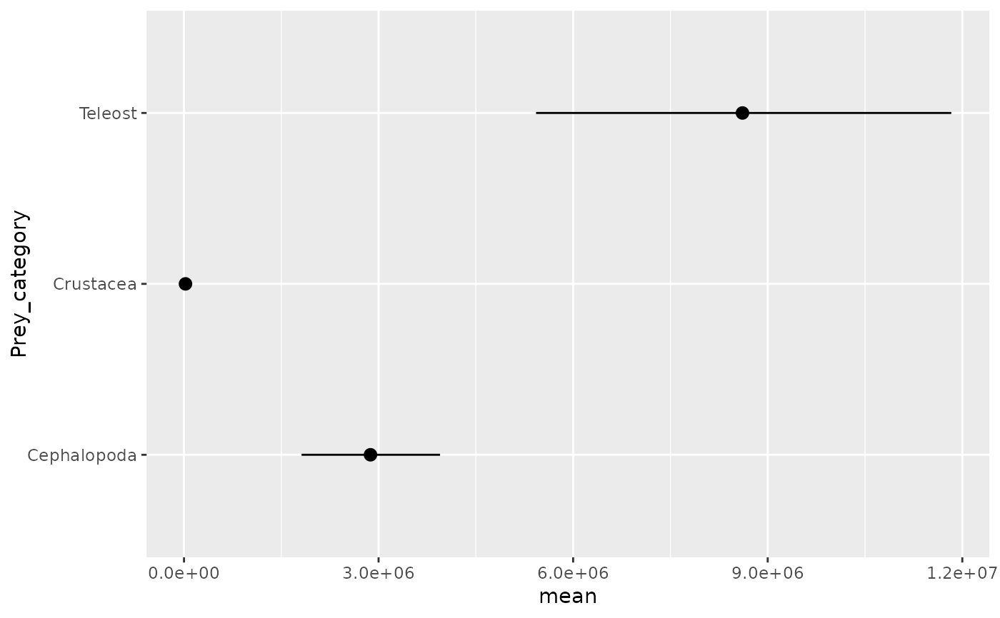
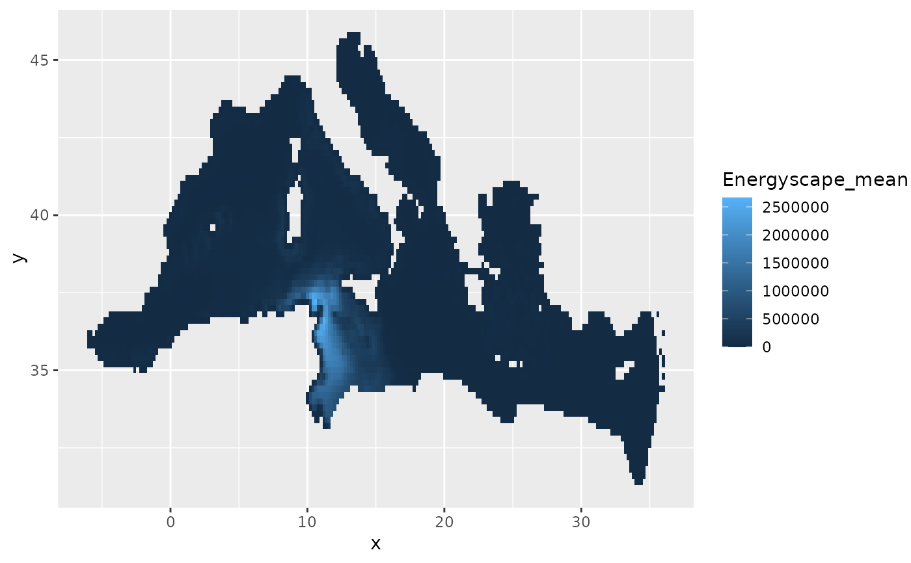

Estimating energyscape and biomass consumption with Monte Carlo simulations
Source:R/mc_simulation.R
mc_simulation.RdFunction to run the Monte Carlo simulation for energyscape and biomass estimations. This functions identifies the prey levels as defined by the prey_taxonomic_level, drop any item for which pW or Energy_content is missing, runs the bio_cons_est function n_sim times for each item, extracts the posterior distributions of each estimated parameter and returns the summarized results for all levels in prey_taxonomic_level.
Usage
mc_simulation(
predator_name,
predator_group,
map_coordinates,
beta = NULL,
prey_taxonomic_level,
diet,
assimilation_rate = 0.8,
n_days = 1,
predator_weight,
abundance_map,
temperature_map = NULL,
nsim = 1000
)Arguments
- predator_name
Character. Name to be used in exported dataframes
- predator_group
Character. Predator taxonomic group, used to select the allometric equation used to compute the analysis. Can be "Cetacean", "Fish", "Charadriform", "Procellariform", "Loggerhead turtle"
- map_coordinates
data.frame containing x and y coordinates of the map
- beta
Vector of life cost parameter, used only for mammals
- prey_taxonomic_level
Taxonomic level at which the diet is summarize (either "Family", "Taxonomic_group" or "Functional_group", for example), i.e. the column in which prey_group will be subsetted
- diet
Diet table, including the considered predator only. Must include pW (proportion of each item in the diet, as proportion of wet weight), Energy_content of the prey item (in kJ/g) and the column provided in prey_taxonomic_group
- assimilation_rate
Assimilation rate to be used to estimate the daily ration (default to 0.8)
- n_days
Number of days over which estimating biomas consumption (default to 1)
- predator_weight
Vector of body mass distribution for the predator (in kg)
- abundance_map
Abundance map of the predator (must provide columns named mean and sd)
- temperature_map
SST map (only used for fish; must provide columns named mean and sd)
- nsim
The number of simulations to run; 1000 by default
Value
The function returns a list of 8 elements: FMR_map, the map of FMR (kJ/d); Energyscape_map, the energyscape map (kJ/d; FMR * abundance), with the abundance of the species (columns named N_); DailyRation_map, the map of daily ration (kg); DailyRationPropBM_map, the same but as proportion of body mass; DailyRation, the estimated daily ration averaged over the map (as a table; in kg); DailyRationPropBM, the same as proportion of body mass; Conso_map, the map of total consumed biomass (in kg) and Conso, the consumed biomass summed over the map (in kg). When more than one category exists for a prey_taxonomic_level, maps are returned as tables in a long format (directly usable with facetting in ggplot), except for FMR and Energyscape which return the maps estimated with the first category (for these two elements, the result is the same with any prey_group).
Examples
# test mc_simulation() with one prey level
CALDIO_result <- mc_simulation(predator_name = "CALDIO",
predator_group = "Procellariform",
map_coordinates = map_coords,
prey_taxonomic_level = "Taxonomic_group",
diet = diet |> subset(Taxonomic_group == "Teleost"),
assimilation_rate = 0.8,
n_days = 30+31+31,
predator_weight = weight,
abundance_map = species_abundance,
temperature_map = sst)
# test mc_simulation() with 2 prey levels
CALDIO_result <- mc_simulation(predator_name = "CALDIO",
predator_group = "Procellariform",
map_coordinates = map_coords,
prey_taxonomic_level = "Taxonomic_group",
diet = diet,
assimilation_rate = 0.8,
n_days = 30+31+31,
predator_weight = weight,
abundance_map = species_abundance,
temperature_map = sst)
#> Computing Teleost for CALDIO
#> Computing Crustacea for CALDIO
#> Computing Cephalopoda for CALDIO
#> Wrapping up
# plot results
ggplot2::ggplot(CALDIO_result$Conso) +
ggplot2::geom_pointrange(ggplot2::aes(y = Prey_category, x = mean, xmin = L10, xmax = U90))

ggplot2::ggplot(CALDIO_result$Energyscape) +
ggplot2::geom_tile(ggplot2::aes(x = x, y = y, fill = Energyscape_mean))
